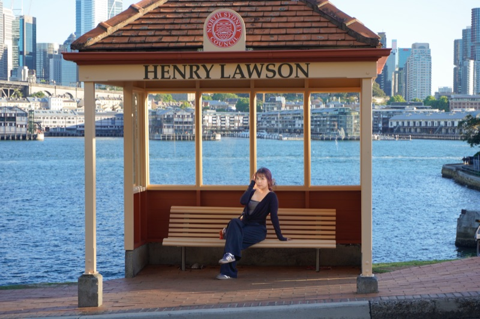
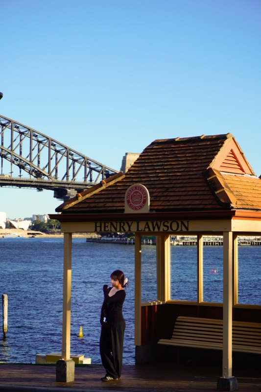
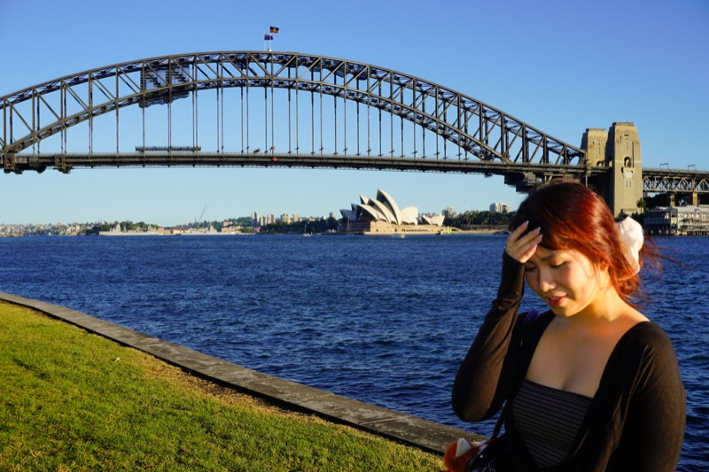

Portrait · Album 04 / 14
An afternoon portrait shoot at McMahons Point: the Harbour Bridge, the Opera House across the water, and the old Henry Lawson shelter by the wharf.



 Next albumThe harbour, one eveningSydney Harbour · Sunday 11 October 2026 · 10 photos
Next albumThe harbour, one eveningSydney Harbour · Sunday 11 October 2026 · 10 photos
Want photos like these? DM me on Instagram or call 0490 324 875.